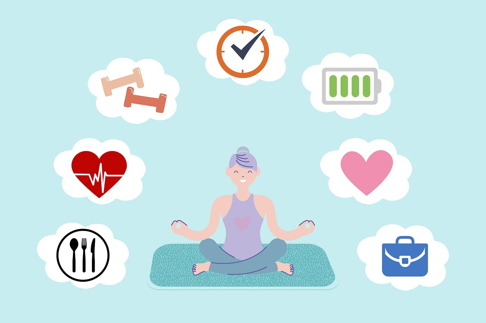

The Importance of Mental Health and Wellbeing
Mental health is just as important as physical health, yet it's often stigmatized and overlooked. Our minds are the control centers of our bodies, and neglecting mental wellness can have severe consequences on our overall health and quality of life.
We need to take care of our mental health so we can:
- Feel happy and calm
- Feel better about ourselves
- Have good relationships with others
- Do our best at work and school
- Stay healthy and strong
- Be happier and healthier
Why Mental Health Matters
- Affects Daily Life: Mental health influences our thoughts, feelings, and actions, impacting relationships, work, and daily activities.
- Impacts Physical Health: Mental health is linked to chronic diseases like diabetes, heart disease, and obesity.
- Influences Resilience: Good mental health helps us cope with challenges and adapt to change.
- Essential for Happiness: Mental wellness enables us to enjoy life, find purpose, and experience joy.
Let's Prioritize our Mental Health
By acknowledging the importance of mental health and taking steps to maintain it, we can:
- Reduce stigma
- Improve relationships
- Enhance productivity
- Increase overall well-being
Remember, mental health is just as important as physical health. Let's work together to create a supportive environment where we can openly discuss mental wellness and prioritize our minds.